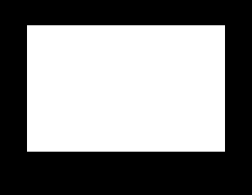
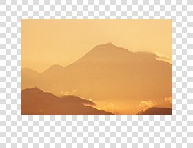
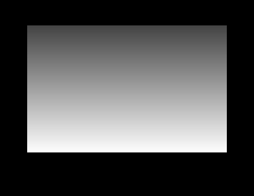
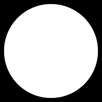

Masking Images
This guide discusses how to use graphics.newMask() to mask individual display objects or entire display groups.
Overview
Masking is a common practice in digital design. Using a black and white (or grayscale) image mask, you can show/hide portions of a display object or display group according to the mask composition. For example, you may create a mask image with white portions and black portions. When applied to a target object/group, the black portions of the mask will render the underlying pixels fully transparent (this is represented by the gray checkerboard in the following examples). In contrast, pixels behind the white portion of the mask image will remain fully visible.
 |
+ |  | = |  |
Mask images can also be created with gray regions or gradients. In this case, a region of 80% gray will render pixels in the underlying object/group at 20% opacity. Similarly, a region of 10% gray will render the underlying pixels at 90% opacity.
|
+ |  | = |  |
Creating Mask Images
Mask image files can be created using any standard image editing program like Photoshop®, GIMP, or Paint.NET. When creating the image, you must obey the following rules to ensure that masks behave properly.
The mask image must have width and height dimensions that are divisible by 4.
The mask image must be bordered by at least 3 pixels of black space on all four sides. You may need to increase the overall size of your mask image to include this border.
If the mask image is smaller than the target image, the region outside of the mask bounds will be fully masked (transparent).
Applying Masks
With the mask file properly prepared and saved, the next step is to create an actual mask using the graphics.newMask() API. Just supply the name of the mask image file to the function as follows:
local mask = graphics.newMask( "maskframe.png" )
Next, apply the mask to an object of your choice using the setMask() function:
local mountains = display.newImageRect( "mountains.png", 280, 216 ) mountains.x, mountains.y = 200,160 mountains:setMask( mask )
|
→ |
As illustrated, the area of the photo masked by black is invisible while the white area remains fully visible. The photo and mask can now be regarded as a single display object and, like any normal display object, it can be moved, rotated, inserted into a display group, etc.
Note that the width and height of the masked object remain the same as the unmasked version, even though the example photo appears smaller because of the mask. Solar2D respects the original dimensions in regards to size and positioning. However, touch/tap detection is ignored on completely masked (invisible) regions of an object unless you declare otherwise — see Hit Masking below for more information.
Currently, mask images are not dynamically selected based on the device resolution, unlike images that are displayed using display.newImageRect(). Thus, if your masks are very detailed and you need to choose a mask image of the proper resolution for different devices, you should check display.imageSuffix and use the appropriate mask image based on its value. See the example in graphics.newMask() for more details.
Mask Manipulation
Masks are always applied to an object’s default anchor point at an angle of 0 with a scale ratio of 1:1. However, you can manipulate the mask after you’ve set it, in instances where you need to rotate/scale it or change its position relative to the image/group.
The following properties are available for mask manipulation:
| Function | Description |
|---|---|
| object.maskX | Sets or retrieves the x position of the mask. |
| object.maskY | Sets or retrieves the y position of the mask. |
| object.maskRotation | Sets or retrieves the rotation angle of the mask. |
| object.maskScaleX | Sets or retrieves the x scale factor of the mask. |
| object.maskScaleY | Sets or retrieves the y scale factor of the mask. |
This example sets the mask, shifts its x position 10 pixels to the left, rotates it 20 degrees, and scales it down to 80% its normal size:
local mask = graphics.newMask( "maskframe.png" ) local mountains = display.newImageRect( "mountains.png", 280, 216 ) mountains.x, mountains.y = 200,160 mountains:setMask( mask ) mountains.maskX = -10 mountains.maskRotation = 20 mountains.maskScaleX = 0.8 mountains.maskScaleY = 0.8
| → |  |
Group Masking
As indicated already, masks can be applied to display groups as well as individual display objects.
local group = display.newGroup() local mask = graphics.newMask( "maskframe.png" ) group:setMask( mask ) group.maskX = group.x group.maskY = group.y
Hit Masking
Masking can also be used to prevent touch/tap response over completely masked (invisible) regions of an object. This is not possible with a standard, unmasked display object surrounded by transparent pixels. In that case, the object will appear smaller than its canvas size, but the system will still recognize user input on the transparent region. Thus, when dealing with very precise touch/tap recognition, the solution is to mask the image, using 100% black to mask the areas which should not return a touch or tap response.
In the normal, unmasked image below, the system will report input response over the entire canvas, including the transparent pixels represented by gray checkerboard. However, if you need to constrain user input to only the visible portion (the icon itself), a mask is the best solution. In the masked example shown here, touch/tap response will be ignored outside of the visible region.
 |
+ |  |
If you need to override this behavior, but still require masking on the object, you can instruct the system to recognize user input on all areas of the masked object by setting the object.isHitTestMasked property to false:
object.isHitTestMasked = false
Dynamic Mask Selection
Unlike images and image sheets, Solar2D does not automatically load different mask files based on the screen resolution. The standard behavior of masks is to scale along with the content area. This makes basic mask usage very simple: provide one mask image file and it will scale according to the object on which it’s placed.
However, an accurate, sharp mask image is sometimes required and
Removing Masks
To remove a mask from an object, simply call object:setMask( nil ). Remember to also nil the handle of the mask if it won’t be used again.
mountains:setMask( nil ) mask = nil